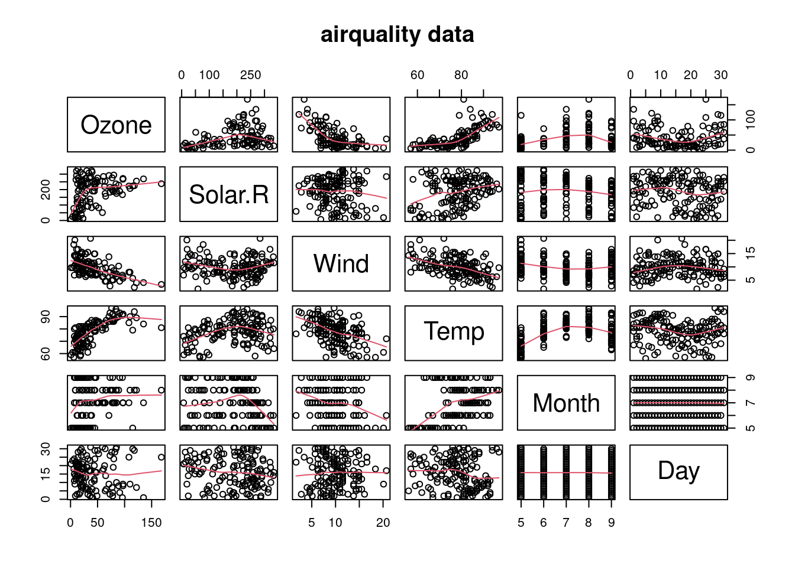
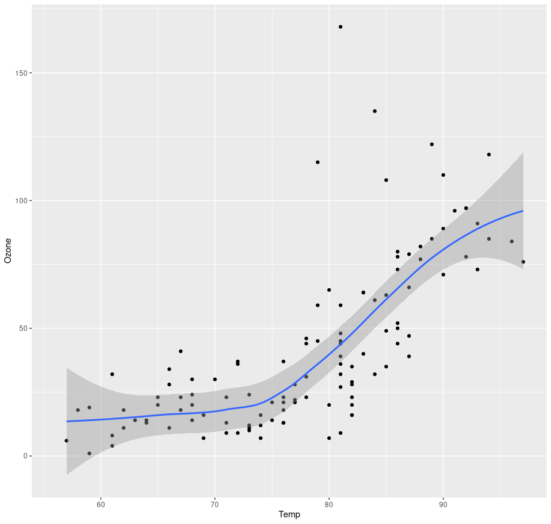

Création d’un rapport sous Rmarkdown
Rmarkdown
Rmarkdown est un programme orienté R qui permet de produire des documents .docx, .pptx, .pdf ou .html directement sous R en incluant des résultats d’analyses qui s’executent lors de la création du document.
Les dépendances
Sous R / RStudio le package knitr permettant la compilation du document doit être présent.
> library(knitr)RStudio permet de générer automatiquement un caneva de fichier Rmardown : File > New File > R Markdown.
Les différentes parties d’un document
L’en-tête
Il s’agit de la section contenant toutes les informations générales permettant la construcion du document : Titre, auteur, date, format, style (css), …
---
title : "Création d'un rapport sous Rmarkdown"
author : "Philippe Ruiz - Aubi"
date: "2023-06-21"
output : html_document
---Le chunck (code source)
Le code à executer doit être encapsulé dans des balises. Celui-ci sera executé lors de la compilation du document :
```{r name, options}
1 + 1
```Le texte
- Il est bien sur possible d’ajouter du texte entre chaque chunk, avec le format souhaité :
- italique : *
- gras : **
code: `- liens : [ ](https://… )
- De gérer les titres, …
# Titre 1
## Titre 2- De gérer les équations, \(E = mc^{2}\) :
$ $
Les analyses et leurs résulats
Les figures
- Une figure générée par un chunk pourra être directment insérée dans le document :
```{r name, options}
require(graphics)
data(airquality)
pairs(airquality, panel = panel.smooth, main = "airquality data")
```- Il est également possible d’insérer une figure enregistrée dans un fichier local en insérant directement un lien dans le document :

Les tableaux
Il est également possible d’afficher des tableaux générés avec R :
```{r}
head(airquality)
``` Ozone Solar.R Wind Temp Month Day
1 41 190 7.4 67 5 1
2 36 118 8.0 72 5 2
3 12 149 12.6 74 5 3
4 18 313 11.5 62 5 4
5 NA NA 14.3 56 5 5
6 28 NA 14.9 66 5 6Le problème est que l’on obtient une sortie graphique de R qui n’est pas très agréable. Pour améliorer ça il est préférable d’utiliser la fonction kable du package knitr.
```{r}
require(knitr)
kable(head(airquality))
```| Ozone | Solar.R | Wind | Temp | Month | Day |
|---|---|---|---|---|---|
| 41 | 190 | 7.4 | 67 | 5 | 1 |
| 36 | 118 | 8.0 | 72 | 5 | 2 |
| 12 | 149 | 12.6 | 74 | 5 | 3 |
| 18 | 313 | 11.5 | 62 | 5 | 4 |
| NA | NA | 14.3 | 56 | 5 | 5 |
| 28 | NA | 14.9 | 66 | 5 | 6 |
Les options avancées pour le documents
Il est possible de fournir des spécificités globales pour le document : format, affichage du code, présence d’une table des matières, taille des figures, style …
Toutes ces informations sont à renseigner dans l’en-tête du document :
Formats multiples
---
title : "Création d'un rapport sous Rmarkdown / Quarto"
author : "Philippe Ruiz - Aubi"
date: "2023-06-21"
output :
html_document :
css : style.css
toc: true
toc_float: true
code_folding: hide
fig_width: 14
fig_height: 7
fig_caption: true
pdf_document :
fig_width: 14
fig_height: 7
fig_caption: true
---Les paneaux
Il est possble de créer facilement des onglets dans une section pour gagner en lisibilité :
# Titre 1 {.tabset}
## Titre 1.1
## Titre 1.2
# Titre 2Toutes les sections de niveau inférieur à Titre 1 {.tabset} seront organisées en onglets.
Bonus : Un peu de Quarto pour terminer
Quarto est la future génération de Rmarkdown qui se veut multi-language (R, Python, Julia, …) et indépendant de R et RStudio. Il fonctionne aussi sous VScode ou sur le terminal.
La nomenclature de Quarto et relativement proche de celle de Rmarkdown. Il faut cependant installer la library quarto :
> library(quarto)Sous RStudio il est alors possible de créer un nouveau document avec un template Quarto :
RStudio permet de générer automatiquement un caneva de fichier Quarto : File > New File > Quarto Document.
Quelques differences pour rédiger l’en-tête
D’une manière générale l’en-tête suit le même schéma que pour Rmarkdown, quelques noms d’options changent, il y a plus d’options pour gérer l’execution du code:
output -> format
html_document -> html
On peut gérer directement l’utilisation du cache :
---
title: "My Document"
format: html
execute:
cache: true
feeze: auto
---Il existe plusieurs formats de présentation (type powerpoint) mais un peut être particulièrement interessant : revealjs.
Il permet d’obtenir des slides en html / javascript de très bonne qualité. Pour les personnes INRAe il existe même un format spécifique respectant la charte graphique de l’institut inrae-revealjs disponible dans le package InraeThemes.
Les options des chunks changent de place
```{r}
#| label: name
#| results: asis
#| eval: true
...Les sorties des tableaux sont plus tarvaillées
```{r}
head(airquality)
``` Ozone Solar.R Wind Temp Month Day
1 41 190 7.4 67 5 1
2 36 118 8.0 72 5 2
3 12 149 12.6 74 5 3
4 18 313 11.5 62 5 4
5 NA NA 14.3 56 5 5
6 28 NA 14.9 66 5 6les balises des onglets s’écrivent différement
D’une manière générale le rendu du document est supérieur sous Quarto à celui de Rmarkdown par défaut.
# Titre 1
::: {.panel-tabset}
## Titre 1.1
## Titre 1.2
:::
# Titre 2